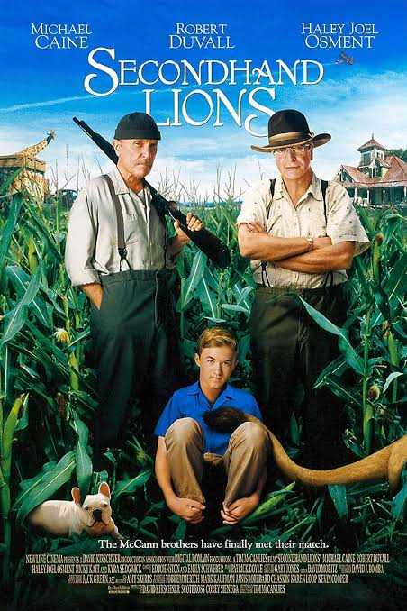
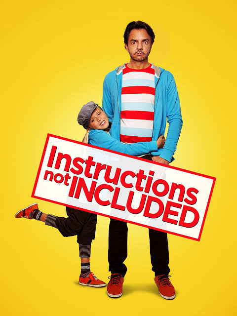
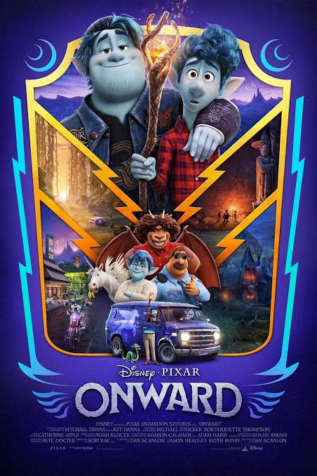

Secondhand Lions is a heartwarming tale of adventure, family, and growing up. It beautifully blends humor and emotion, making it a timeless classic for all ages.
Instructions Not Included is a touching story about love, sacrifice, and the unexpected challenges of parenthood. It showcases the power of family bonds and the importance of cherishing every moment.
Onward is a magical journey of two brothers who embark on an adventure to discover if there's still a little magic left in the world. It's a heartwarming tale about family, love, and the importance of cherishing the moments we have together.
